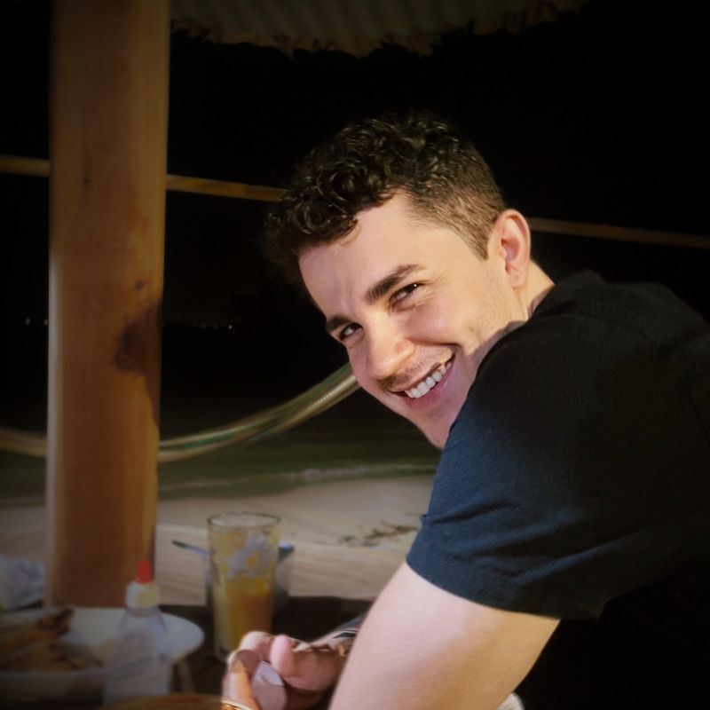
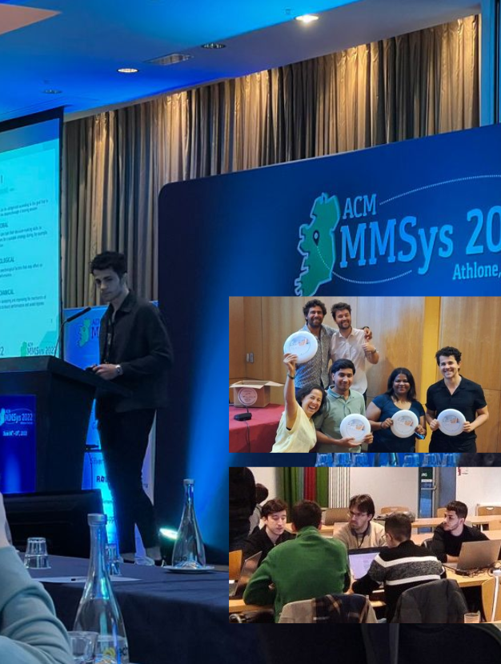

Amazonian PhD Researcher
Mauricio
Cordeiro
On a mission to develop reality-centric AI for Public Health, building methods that hold up under real conditions, with real constraints.

About me
I studied Biomedical Engineering at the Universidade Federal do Pará, then moved to a PhD at the Technological University of the Shannon, working on AI for human performance. The through-line was always the same interest: what happens when you put machine learning in contact with how the body actually works.
Most of my work sits at the intersection of machine learning, generative AI, performance monitoring, and computer vision — usually in the digital health space. I am drawn to methods that withstand real-world conditions: messy data and decisions made in real-world scenarios with the human in the loop.
I work in English and Portuguese. Spanish well enough to follow a conversation.
One of the pillars I believe in
Statistical modeling and AI are tools. Whether it is a neural network segmenting an MRI scan, a survival model flagging post-operative risk, or a reinforcement learning agent adjusting a drug dosing protocol — the output only matters if someone can act on it. The method is secondary. The decision is the point.

Main tools used in my projects
- Python / Scikit-learn
- PyTorch
- TensorFlow
- Git / MLOps
- SHAP
- SDV
- Data Augmentation
- Statistical Validation
- Time-series Generation
- Privacy-Preserving
- OpenCV
- MediaPipe
- Sports2D
- Pose Estimation
- Object Tracking
- Power BI / DAX
- Statistical Modelling
- Quantitative Methods
- Project Management
- Research Design